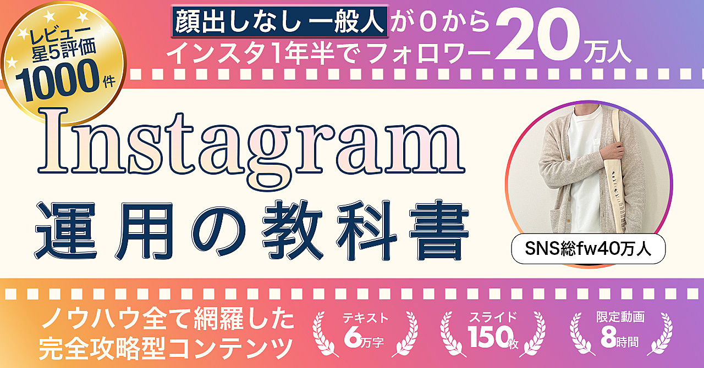
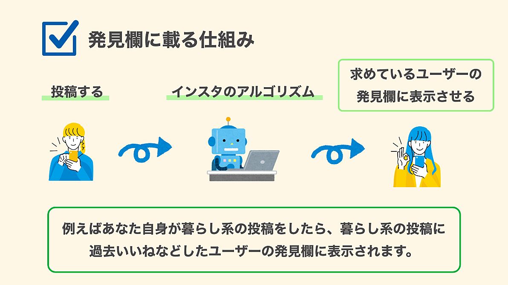
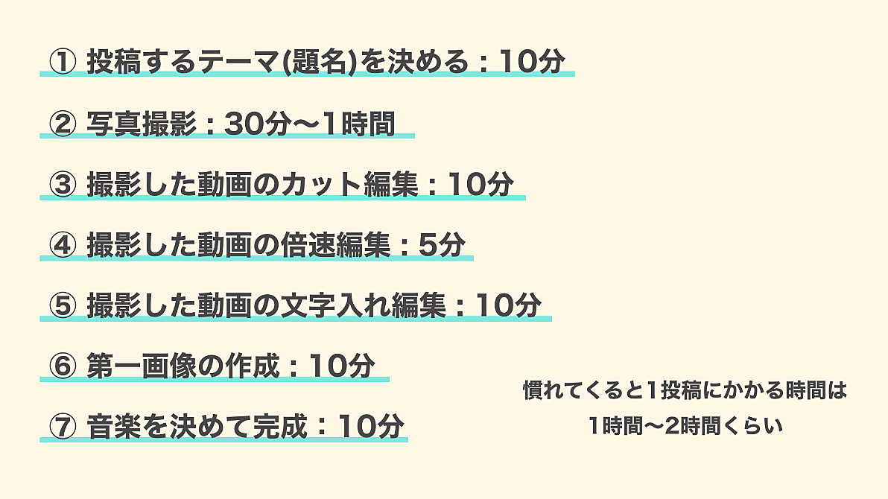
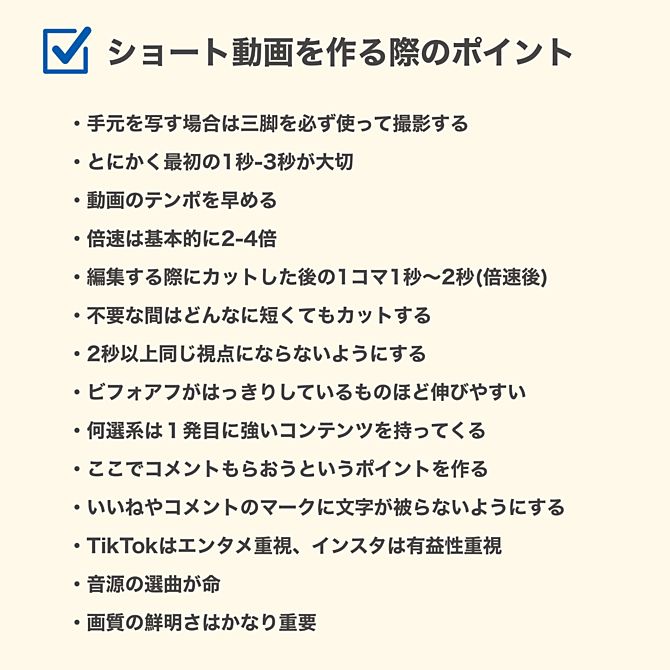
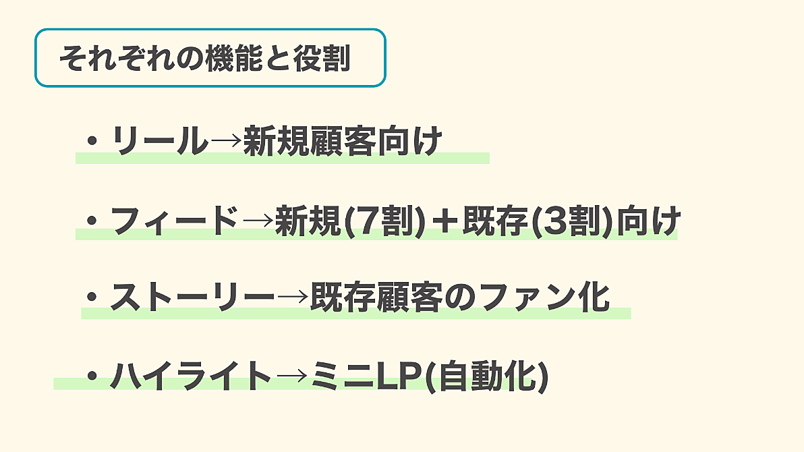

1
プロフィールを作る
IDと名前は「名前＋発信ジャンル」を基本にする。IDのアンダーバーを重ねず、呼びにくい敬称つきの名前も避ける。
- 写真は発信内容を連想できるもの
- 文章は対象・発信内容・テーマ・専門性を入れる
- 共感できる現在地と、フォローする理由を示す
原資料の添削例：今の状況、取り組んだ期間、目指せる結果を具体的に並べ、「同じ立場の人」と「フォローする理由」を一度に伝える。大きくなった後の原著者プロフィールをそのまま真似ず、初期向けの例を使う。
p29–33「誰に、何を、どう届けるか」を設計し、投稿・動画・ストーリーを同じ目的につなげるための図解版です。
原資料「【全ノウハウ公開】Instagram運用の教科書」（けい）の内容を、学習用に再構成しています。数値・機能・画面名は原資料収録時点の説明です。現在の仕様を示すものではありません。

表紙内の実績・評価・部数は原資料に記載された公開時点の表現です。
投稿だけを直しても、プロフィールや導線が弱いと成果につながりません。上流から順に見直します。
原資料は、顔や知名度ではなく、役に立つ情報で伸ばす道を中心に説明しています。その前提で、好き・需要・差別化を重ねます。
人物そのものが入口。見た目や既存の認知が強く働く。
相手の困りごとを解く情報が入口。顔を出さない運用でも設計できる。
なぜ続けるのかを紙に残す
探している人がいるかを見る
先行者にない具体性を作る
収益・事業・影響力を分ける
数値は目安ではなく、原著者の当時の判断市場規模・フォロワー数・収益額などの数字は、原資料内の経験則です。現在の再現性や結果を保証するものではありません。
原資料 p21–28、p33–40
名前＋発信テーマで内容を予告。写真もテーマが伝わるものを選ぶ。
IDのアンダーバーは一つまでにし、読み間違えにくくする。
名前とテーマ／発信内容／テーマの詳細／対象／権威性や専門性。
最初から完成を目指さず、他のプロフィールも見ながら直す。
相手を具体化
テーマを一言で
困りごとを明確に
変化を見せる
原資料 p29–35
フィードの章は、入口づくりから分析まで17項目あります。省略せず、実際の作業順で追います。

IDと名前は「名前＋発信ジャンル」を基本にする。IDのアンダーバーを重ねず、呼びにくい敬称つきの名前も避ける。
原資料の添削例：今の状況、取り組んだ期間、目指せる結果を具体的に並べ、「同じ立場の人」と「フォローする理由」を一度に伝える。大きくなった後の原著者プロフィールをそのまま真似ず、初期向けの例を使う。
p29–33「誰に／どんな発信／どの問題を解く／どうなってほしい」を先に決める。原資料は、家を建てる前の設計図にたとえる。
二つの軸を分ける：原資料は「1年でどれだけ増えたか」と「月の紹介収益」を別の軸で比較し、紹介収益だけの当時の分類だと明記している。伸ばしやすい分野と、単価が高い分野が同じとは限らない。
一つのアカウント内で分野を組み合わせる方法と、集客用から別アカウントへ流す方法を示す。ただし初期は広げず、まず狭くする。
p33–40始めたばかりの発信者には、人物そのものをフォローする理由がまだない。原資料は、情報に「再現性」と「有益性」を入れることから始める。
顔を出すかどうかより、まだ知られていない本人をフォローする理由が何かを考える。原資料は初期に領域を広げず、「真似できる」「参考になる」の二点を投稿内に置く。
p40–41一貫した投稿でジャンルを認識してもらい、滞在時間・いいね・保存が積み上がると「アカウントの力」がたまる、という原資料の説明。
発見欄は過去に見た内容と関係が近い投稿を出す場所、という説明。趣味投稿を混ぜて分野が散ると、誰へ出すか認識されにくいとする。
p41–43ホームはフォロワーがホーム画面から見た数、外部露出はフォロワー外から見られた数として説明。規定違反時の露出制限やアカウント停止にも触れる。
用語を分ける：「ホーム」はフォロワーがホーム画面から見た数。「外部露出」は発見欄などから非フォロワーへ届くこと。プロフィール閲覧とは別です。
原資料は、規定違反や無作為な反応集めで露出・機能が制限される場合があるとし、子どもの上半身が写った投稿で制限されたという当時の例も挙げています。
p43–44原資料が挙げる六つを、そのまま順に追う。最後のPDCAが本体で、ほかは初期の補助施策と位置づける。
原著者はまとめアカウントの再投稿1回で50〜100人増えた当時の事例を紹介。ただし交流策は補助で、本体は投稿の質と2週間ごとの改善だと区切っています。
数字は題名・いいね・保存・リーチ・1時間後・12時間後・1日後を記録。14投稿ほどたまったら、良い／悪い理由と次の2週間で変える点を書きます。
p44–53上位アカウントを5〜10件選び、約100企画を書き出す。企画を分野ごとに分け、自分が全体のどこを扱うかを見る。
一覧の目的は、感覚で当てることではない。伸びが止まった時に「なぜ伸びたか」を言葉で説明し、次の一手を作れる状態にする。
p53–54大きくなった後の投稿だけを見ない。原資料は、先行者が初期に何をして、どの投稿から伸び、第一画像をどう変えたかを見るよう勧める。
ブラウザで見られる場合は過去のいいね数も確認し、伸び始めた地点、題材、第一画像の変化を時系列で追う。現在の大きなアカウントの最新投稿だけでは、初期の勝ち方が見えにくいという判断です。
p54–55原資料はスマホ用・PC用の編集アプリ例を挙げ、慣れるまでは一投稿に5〜6時間かかったと記す。続けるため、他人の反応ではなく自分で動かせる目標を置く。
原資料の制作環境：スマホのPhont／Canva、PCのPhotoshop／XDを例示。原著者は最初の半年ほどPhontを使ったとしています。初期は一投稿5〜6時間かかり、三か月以内にやめる人が多いという説明です。
外部の反応で決まる目標を避け、原著者は「1,000投稿までやめない」を置きました。毎日でも約3年かかる長期目標です。
p55–56「この見た目ならこの発信者」と分かる顔を作る。よいと思う複数の投稿から要素を選び、自分用に変える。
原著者は1万人を超えた時と16万人を超えた後にも変更し、合計7回直しています。色をそろえて繰り返し見た時に覚えてもらう一方、色数を増やして目立たせる方法は難しいと説明します。
p56–58物だけを写すより、手や体の一部を入れる。原資料は、顔を出さなくても人がいる感じを写真に残す方法として示す。
顔を出さない場合でも、手や体の一部を入れ、物だけの写真より「誰かが使っている」場面を残す。原資料のこの項目は、この一つの判断に絞られています。
p58–59競合の第一画像から何度も使われる言葉を記録し、自分の投稿では繰り返し伸びる企画を探す。
先に競合の第一画像から繰り返し出る言葉を集め、投稿後は自分の数値から繰り返し伸びる企画を見つける。「外から言葉」「内から企画」の二方向でためます。
p59同じ商品でも「掃除の方法」「複数商品の一つ」「日常の手順の一つ」と見せ方を変える。原資料は、一題材から三つほどの見せ方を作る例を示す。
一つの商品を一度だけ使うのではなく、単独の使い方、複数商品の比較、日常の手順という別の文脈へ置き直す。同じ題材でも入口を変える考え方です。
p59–60第一画像、2〜8枚目、9枚目、最後の画像で役割を分ける。
2〜8枚目では、番号、内容の題名、価格と購入場所、文章の枠、写真との一致、2行以上の改行、線などの小さな工夫まで見る。9枚目の「まとめ／確認表／手順」は、見返す理由を作る役割です。
最後の画像は、数字の良かった過去投稿と投稿日を載せて探しやすくし、初期は普段の発信内容も説明。保存とフォローの案内を見つけやすく置きます。
p60–66投稿下の文章には三つを入れる。
本文で伝え切れなかった考えを補う場所でもあるため、単なる定型文にしない。最初に一番してほしい行動を置き、その後に補足と普段の発信案内を続けます。
p66原資料の一事例では、0〜300人を一か月、500〜1,000人を三か月、1万人を半年ほどの目安としている。500人を超えた頃から発見欄の流入が見え始めたと説明する。
遅い時は、市場の小ささ・内容の質・第一画像の見づらさを疑い、二週間ごとに見直す。
原著者のお金分野の当時の推移：0→300人が1か月、300→500人が2か月、500→1,000人が3か月、5,000人が4か月半、1万人が6か月。外部流入なしのフィード運用例です。
さらに原著者の暮らし分野は1年で7.5万人、1年半で19万人という事例。ジャンル差があり、収益とは比例しないと本文で分けています。
p66–68毎日見る項目を固定する。数字だけでなく「なぜ」を言葉にする。
毎日のインサイト確認に加え、競合分析へ最低30分、2週間ごとの改善、前回仮説の確認を含む。10枚目まで作ったか、キャプション、人の写り込みまで確認する全17項目です。
p51–53、p68–69所要時間は原著者が慣れた後の当時の例で、合計1〜2時間。アフレコを入れる場合は、音楽より先に置きます。


題名を決める→写真撮影→カット→倍速→文字→第一画像→音楽の順。アフレコを入れる場合は音楽より先に置く。
原資料の例では、慣れた後の一投稿を1〜2時間ほどとしている。
原著者は短尺動画を始めた時点で約4万人、その後1年で15万人以上増えたと記しています。これは当時の本人事例で、同じ結果を示す目安ではありません。
p69–70原資料のチェック表は、冒頭だけでなく撮影・編集・反応の設計まで14項目ある。
上の14項目を、企画、撮影、編集、反応の四つに分けて使う。第一投目の企画、撮影中の三脚と視点、編集時の秒数、公開後のコメントまで一続きで確認します。
p70–71手持ちではなく三脚を使い、鮮明さと自然光を重視する。明るさを後から大きく変えると画質が落ちるため、撮影時に整える。
原著者の当時の例では、撮影後の明るさ補正は写真アプリで「30」だけ上げ、古い端末と新しい端末で鮮明さが変わったと説明。現在の端末推奨ではなく、編集しすぎない判断例です。
p71–73小さな間も不要なら切り、遅さによる負担を減らす。文字を読まなくても、題名と映像だけで内容が分かる状態を目指す。
原著者はVLLO（一部有料）またはCapCutを例示。「速くて読めない」という反応があっても、遅さの負担の方が大きいと判断し、題名と映像だけでも意味が分かる構成を優先しています。
p73原資料の六施策は、動画の主題に直接質問する方法だけではない。背景・音・時事など、視聴者が反応する別の入口を仕込む。
音源の当時の事例：動画と無関係な電車音を使った投稿で500件以上のコメントがつき、その約7割が音源への反応、再生は370万回だったと記しています。施策の仕組みを示す本人事例です。
p73–75TikTokとリールに同じ動画を出し、TikTokで広がった人をInstagramへ流す。ただ呼ぶだけでは弱いため、Instagram側に来る理由を五つ用意する。
動画末尾の「Instagramも見る」は存在を知らせるだけで動機が弱い。ゆっくり見られるフィード、Instagram側だけの資料、日々のストーリーを組み合わせて、移る理由を作る。
原資料の受講者事例では、引っ越し資料を使いTikTok流入だけで1か月に0人から約5,000人へ伸びたとしています。Instagram側は訪問前に12投稿ほど用意します。
p75–77原資料p78は、編集の一連の流れを見せる外部動画への案内で、PDF本文に手順の続きはない。
原資料は外部動画を見るためのURLだけを置き、PDF本文に編集画面の説明や続きはありません。そのため、この図解版では前後の本文以上に手順を足していません。
p77–78暮らし分野の事例を五段階で説明する。
当時の到達：1か月でTikTok 5万人、Instagram 5,000人。半年時点でそれぞれ15万人・10万人という原資料の事例。最初の4本が各100万回以上、半年で100万回以上を14本と記しています。
強い企画：100万回以上の投稿を集め、引っ越し、フロアマット、変化が大きいBefore／Afterを優先。企画だけでなく、服を青からアカウントに合うベージュ／グレーへ変え、爪や手元も整えます。
伸びた動画から引っ越し資料へつなぎ、3〜5日に1回は補足のフィードを挟む。資料は「動画だけでは分からない手順」をInstagram側で受け取る理由にしています。
p78–84真似しやすい便利技は再生されやすい一方、発信者本人への関心は弱いという整理。役立ちと憧れを両方見せる。
原著者は商品を近くで撮るだけでなく、部屋全体が見える遠めの画角へ変え、世界観も伝えた。
近い画角で商品だけを見せる状態から、部屋全体が分かる遠めの画角へ変更。役立つ商品情報と「この部屋を真似したい」という憧れを一つの動画へ入れた例です。
p84–85アルゴリズムやシャドウバンなど、自分で変えにくい理由だけを探さない。内容・更新頻度・数値を見直す。
原資料の比較例：新規50・離脱25より、新規300・離脱200の方をよい状態と見る。離脱率の低さだけで判断せず、新しく増える力と内容の深さを確認します。
p85–87開始1〜3秒、狙ったコメント、音源、アフレコ、文字、保存・共感、有益性・再現性を確認する。
数値を表へ残し、競合を毎日見て、二週間ごとに前回の仮説を振り返る。原資料の表には「10枚目」「キャプション」も含まれる。
基礎編は日々の関係づくり、応用編は行動までの導線です。原資料は目安のフォロワー数を示しますが、ここでは役割の違いで分けます。
投稿の共有／日常／丁寧なDM／毎日の接点。人柄と安心を積み上げる。
認知→興味→理解→行動。急に売らず、必要性から順に届ける。
収益化前の運用として、四つの習慣を挙げる。
特に伸ばしたい投稿は、公開前に予告したり、先にストーリーで悩みを聞き、投稿で答えたりして初速を作る。DMのよくある質問は、やり取りを見せるか、ストーリーで答えます。
p87–91原資料は、紹介収益なら一万人を一つの目安とし、自分の事業へつなぐ場合は数千人でもよいと分ける。先に役立つ情報を届け、信用をためる。
依頼が来たら、会社情報と提供元を調べる。原著者は大手ASPかどうかも確認していた。
原著者自身は本格的な紹介を3万人超から開始。扱う物が分からなければ同分野の発信者30人ほどのハイライトを見て、扱う案件を一覧にする方法を示します。
依頼元は会社情報と実在性を調べる。原著者は、サイトに書かれた会社が実在しなかった経験も挙げています。
p91–93フォロワー数と収益額は別のもの。フォロワーが多くても売れない相談の多くは、ストーリーの使い方に原因があったという原著者の整理。
応用編は、すでにリンクを使っている人へ向けた内容として区切られている。
原資料はこの先を、すでにリンクを使っている人向けと明記。初心者は基礎編までにし、1万人やリンクを使い始める時に読み返す区切りです。
p94–95リールは新規、フィードは新規七割＋既存三割、ストーリーは既存フォロワーとの関係、ハイライトは常設の案内という整理。
収益導線は「認知→興味関心→教育→販売」。原資料は、三番目を飛ばして販売する失敗を指摘する。
原資料の配分は、リール＝新規、フィード＝新規7割＋既存3割、ストーリー＝既存との関係、ハイライト＝常設導線。役割を重ねず、順に渡します。
p95–96人数を増やすだけでなく、求める相手に「この発信は信用できる」「この人から選びたい」と感じてもらう。
原資料は強い比喩も使うが、要点は、理解と信頼を作ってから販売へ進むこと。
ここでいう「教育」は原資料が使う言葉で、求める相手に必要性を理解してもらう意味です。人数だけを増やすのではなく、信用して選ぶ人を増やす論点として扱われています。
p96–97自分の意見を思いつきで出すのではなく、将来扱うテーマや商品から逆算し、前もって関係する考えを伝える。
原著者はこれを「種をまき、後で回収する」と表現する。
新しい紹介を始める時ほど、いきなり商品名を出さない。将来扱うテーマに関わる考えや必要性を先に出し、後で商品や別アカウントへつなぎます。
p97–98低単価の分野から高単価の分野へ広げる方法を二つに分ける。
原著者は後者を選び、告知前に一〜二か月かけて「お金の情報も参考になる人」へ印象を変えたと説明する。
原著者の当時の結果：暮らし分野からお金分野へ移る前に1〜2か月準備。告知後2週間弱で1万人、1か月半で1.5万人、月200〜300万円と記しています。個人事例であり、一般的な目安ではありません。
p98–99人は自分に利点があり、必要だと感じてから動く。お金の例では「学ぶ必要がある」→「知らないと損をする」→「何をすればよいか」の順に進める。
原資料は、得たい気持ちより損を避けたい気持ちの方が動きやすいと説明する。
「お金が増える」だけでは、今困っていない人は動かない。まず必要性、次に知らない損、最後に何をすればよいかへ進む。美容など別分野でも同じ順序へ置き換える考え方です。
p99–101商品をいきなり出さず、大きな困りごとから具体策へ狭める。
原著者は一〜二か月準備し、別アカウントが1,000人を超えてから告知した。
具体策を出す段階では、①手段 ②何か ③どこで学ぶか ④信用を補う情報、の四点を並べる。原著者は新アカウントを1,000人まで単独で育て、その後メインから告知しました。
フィードの「ご報告」は中身が見えず届きやすいとして一度だけ使い、必ずフォローする理由を本文に入れます。
p101–108反対意見の人へ断定的に言い切る代わりに、自分の経験と考えの変化として話す。
「以前はこう思っていた。出来事を経て、今はこう考える」という形なら、相手が自分で気づく余地を残せるという原著者の考え。
すべてをこの型に固定するのではなく、強く言う場面もあると原資料は補足。コメントの反応を見て、自分の発信スタイルに合う強さへ直します。
p108–110原資料は一つのリンクまでに8〜10枚ほど使う例を示す。
最初は感想が集まりにくいため、資料を渡す時に完了後の感想を頼む。第三者の言葉を最後に置き、原著者だけの主張から一段離して納得材料にします。
p110–114原資料は健康商材の例で、薬機法に注意するよう明記する。
原著者の比較では、外部アプリで整えた見た目より、ストーリー上で線を引いた手書き側の閲覧数が高かったとしています。リンク面は文章を少なくし、黒より少し灰色の文字を使う例も示します。
一枚目は対象が分かる大きな一言。後半で成分や公的資料など論理的な根拠へ移る。写真、背景色、文字サイズ、線の変化は、CMやYouTube広告の場面転換も観察対象にします。
p114–119原資料は楽天ROOMを例に、自分が勧めた商品が売れる経験から始め、慣れたら商品分野を増やす流れを示す。
原資料では、自分の購入品をまとめる仕組みで「勧めた物が売れる」経験を先に作り、その後に扱う商品分野を増やす順序です。
p120ハイライトを「ミニLP」ととらえ、初めて見た人も次へ進める状態にする。
リンクは理想では1枚目、遅くとも1〜3枚目。スマホのプロフィールで最初に見える5つへ、特に成果を出したい内容を置きます。
左側にも続きがあると知らない人へ、ストーリーで定期的に案内。各ハイライトを学ぶ順に並べ、次へ進める設計にします。
p120–123原資料は七つを列挙する。
期限の使い方：原著者は締切の1〜2週間前から時々カウントダウンを出し、最後の5日間は毎日出す例を示します。
資料の渡し方：ストーリーへ反応した人、または投稿へコメントした人へ渡す。受取条件そのものをやり取りの入口にし、感想も依頼します。
p123–125違いは「不自然さがないか」。紹介する時だけ文章や日常が急に変わると、商品だけが浮いて見える。
愛用品なら普段から使用場面を見せ、案内時だけ現れないようにする。
文章の口調、日常から紹介への切り替え、商品の使用場面を確認する。紹介日にだけ現れる商品は浮くため、普段から使う場面を少しずつ見せます。
p125一枚あたりを見る時間が短いため、同じ見た目を続けない。文字サイズ、背景、写真、線を変え、読む場所を作る。
どちらが見やすいかをフォロワーへ聞き、編集方法を決める案も示す。
同じ内容でも、文字の大小、背景、写真、線で読む場所を作る。どちらの編集が読みやすいかは、二案をフォロワーへ見せてアンケートで決める方法も示します。
p125–127原資料は閲覧率30％を一般的な目安として紹介する一方、リンク・メンション・投稿共有で下がることがあると説明する。
一時的な施策であり、やりすぎないようにも書かれている。
二択質問は、普段届く質問を材料に20個前後出す例。反応を意図的に増やす一時策なので、常に行うのではなく、閲覧が下がった時に時々使うとしています。
p127–129引っ越し企画の末尾から、資料またはハイライトへ案内し、別の連絡先を経て紹介リンクへつなぐ事例。
標準形として、フィード→ハイライト／ストーリー→リンクを挙げる。不信感のない流れを重視する。
原資料の引っ越し例は、フィード末尾→資料またはハイライト→別の連絡先→紹介リンク。一般形はフィード末尾→ハイライト／ストーリー→リンクです。
p129–130成果報酬だけでなく固定報酬も組み合わせる。固定で最低額を作り、成果で上積みする考え方。
報酬があるから何でも紹介するのではなく、自分が良いと思うものを扱う。
原著者は固定報酬だけで前月70万円以上だった当時の例を記載。固定で最低額を作り、成果報酬で上積みする案です。どちらでも、自分がよいと思う物だけを扱うとしています。
p130–131クリック数より、クリックから成果になった割合を見る。原著者の当時の基準は20％＝最高、15％＝良い、10％＝普通、5％＝改善。
10％以下なら訴求導線を変え、成果率を上げるとしている。
クリック数が多くても成果につながらなければ意味がないため、クリック→成果の割合を先に見る。10％以下なら、問題提起からリンクまでの順序を変えて再検証します。
p131–132二つに切り分ける。
前者なら案件や主な訴求先を変え、後者なら説明の流れを直す。
フォロワーの範囲内で同じ案件を繰り返すと、新しく対象になる人は減る。成果率が同じなら案件追加／主な訴求の変更、成果率が下がったら説明内容の修正という分岐です。
p132–133閲覧数の多さより、狙った人が深く読むかを見る。原著者は金融分野で一日20〜30枚の濃い情報を出し、閲覧率が10〜15％でも意欲の高い人を残す運用をした。
その事例では、閲覧数が少ない別アカウントの方が、主アカウントより売上が三倍以上だったと記す。
金融の例では、口座開設という行動の壁が高いため、広い閲覧より理解の深い人を残す設計でした。DMで「一度で読めず保存して読み返す」という反応も確認していたと記しています。
p133–135一度ですべてを使うのではなく、今日のストーリーで意識する点を一つ増やし、少しずつ身につける。
原資料本文はここで全24項目を閉じます。次頁は「リスクヘッジ」の見出し直後で途切れるため、この先の手順は補っていません。
p135短く、誰の話かを示す。
背景と放置した時の困りごと。
方法と根拠を順に見せる。
行動先を見つけやすく。

原資料 p94–135
リーチ、再生、プロフィール到達、新規フォロー。
保存、返信、DM、クリック後の成果率。
原資料 p51–53、p86–87、p127–135
全部を一度に変えず、上流から一つずつ確認します。
原資料 p1–136。各章末の頁は、提供PDFの頁番号です。